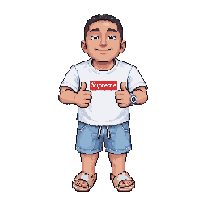

Cloud Infrastructure · DevOps
유준형Jason Ryu
통신 장비 검증·기술지원 약 9년의 경험을 바탕으로, 클라우드 인프라·DevOps 직무를 준비하고 있습니다.
- 실무 경력
- 통신 장비 검증·기술지원약 9년 · 자람테크놀로지 품질기술팀 과장
- 클라우드 경험
- 개인·팀 프로젝트GKE 운영 · Kubernetes·Ansible · 모니터링 자동화
- 자격·교육
- 정보처리기사 취득AWS SAA 준비 중 · DevOps 과정 2026.12 수료 예정
프로젝트 역량교육·개인·팀 프로젝트
- GKE 웹게임 인프라 · 개인 프로젝트
- Terraform 기반 구성, 온디맨드·Spot 노드풀 분리, GitHub Actions·WIF 배포 자동화. 설계·운영 자료 보기
- ENDIVE-CLOUD · 2차 팀 프로젝트
- 담당: Kubernetes 클러스터 구축·Ansible 자동화. 팀 구성·발표자료 보기
- Bluebell · 1차 팀 프로젝트
- 담당: Monitoring 스택·Alerting 프로비저닝 자동화. 모니터링 구축 자료 보기
실무 경력통신 장비·품질기술
(주)자람테크놀로지
약 9년 · 2026.04 퇴사사업부 품질기술팀 · 과장
통신 장비 및 광모듈 검증
통신 장비와 광통신 모듈의 동작 및 호환성 검증 업무 수행.
BMT·PoC 기술 검증 지원
고객사 요구사항에 따른 BMT 및 PoC 준비, 장비 검증과 기술지원 업무 수행.
고객 기술지원 및 장애 대응
통신 장비 관련 고객 기술문의 대응, 장애 분석 및 현장 기술지원 수행.
통신 인프라 설치 및 유지보수
DWDM 관련 현장 작업, 통신 장비 설치 및 유지보수 업무 수행.
품질 및 운영 관리
장비 재고 관리, 품질 관련 업무 및 ISO 인증 수검 대응.
기술 스택경험 출처별 구분
통신 분야 실무와 클라우드 교육·프로젝트 경험을 구분했습니다.
- 통신 실무 기반
- 클라우드 · 교육·프로젝트
- 자동화 · 교육·프로젝트
- Linux·컨테이너 · 교육·프로젝트
학력Education
- 한성대학교
- 컴퓨터공학과 · 공학사 · 2026.08 졸업
자격Certifications
- 정보처리기사
- 2026.06취득
- AWS Certified Solutions Architect – Associate
- SAA-C03준비 중
현재 학습교육 과정
통신 인프라 실무 경험을 기반으로, 클라우드 환경의 인프라 구성과 자동화 기술을 학습하고 프로젝트에 적용하고 있습니다.
- 클라우드 인프라·DevOps 직업훈련 과정
- 수강 중 · 2026.12 수료 예정
- 주요 분야